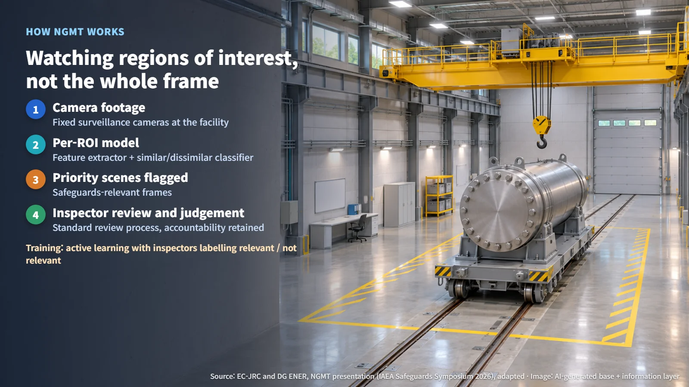
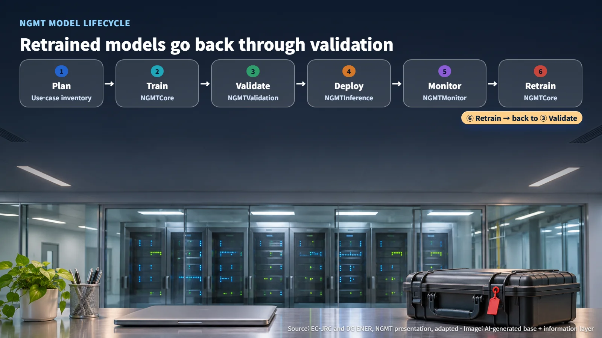

Europe · Euratom · Safeguards AI
AI Picks the Footage, Inspectors Make the Call: How Euratom's NGMT Shows Safeguards AI Being Verified
Euratom's NGMT trains a model for each camera and region of interest to flag surveillance scenes for review, while inspectors keep the judgement and the accountability.
Surveillance cameras at nuclear facilities record around the clock, and somebody has to review that footage. Picturing an inspector watching every hour of it is daunting. Handing the job to artificial intelligence (AI) sounds faster, yet it also raises a fair question: who checks the AI when the subject is nuclear material? The IAEA Symposium on International Safeguards, held in Vienna from 9 to 12 November 2026, takes up exactly this question. On 10 November it hosts an "AI and Safeguards" session on responsible adoption, transparency, and trust in verification.
Safeguards are the activities that verify nuclear material is being used for its declared peaceful purposes, and reviewing surveillance camera footage is part of an inspector's work. A European case presented the same day, NGMT, offers a clear view of which tasks go to the AI and which stay with people.
Hours of Surveillance Footage: Which Scenes Does the AI Pick Out?
NGMT (Next Generation Model Trainer) is a tool that supports the review of surveillance footage. It was developed jointly by the European Commission's Joint Research Centre (JRC, Ispra, Italy) and its Directorate-General for Energy (DG ENER, Luxembourg). Its central design choice is to train a separate model for each camera and each region of interest. A region of interest (ROI) is a defined area of the image where the judgement takes place. Imagine holding a picture frame up against a wide screen and watching only what happens inside that frame.
A pre-trained feature extractor converts the footage into a representation that is easy to compare, and a binary similar/dissimilar classifier decides whether what it sees resembles the target an inspector has defined. Instead of running all footage through one general-purpose judge, the system searches region by region.
Training uses active learning. Inspectors mark examples as "relevant" or "not relevant" (labelling), and those labels feed into model training in an interactive, conversation-like loop. The presentation states that this approach lets a model be trained in a short time. The reasons given for splitting the work into many small models are practical constraints in the field: target objects differ from facility to facility, some objects fall outside what existing models cover, training footage is sensitive, and models need retraining. What changes for the inspector is the starting point: instead of watching long recordings from beginning to end, they can begin with the scenes the AI has flagged first.

Reading "Up to 98% Fewer False Positives": Recall and False Positives
The presentation lists the current operational status: 25 deployed models, a reduction in false positives of up to 98%, DG ENER's approval of the tool for video review support, completion of a second hands-on workshop for inspectors, and the first field deployment at a facility in France. The presentation abstract states that validation was carried out across several facility types and that operational use has begun in Euratom safeguards work.
Two terms help in reading these figures. Recall is the share of truly relevant cases that the AI actually finds. A false positive is a case where the AI marks an irrelevant scene as relevant. Translated into numbers, "up to 98% fewer false positives" means that if there were 100 false positives under the same conditions, there would be as few as 2. The calculation is 100 × (1 − 0.98) = 2, or about 2 cases. This is an illustration that converts the percentage into a count; the actual number of false positives, the denominator, and the comparison method were not included in the public slides.
The two measures are tracked separately. As a general rule, tightening the decision threshold to cut false positives can raise the risk of filtering out relevant scenes as well, which is why the presentation lists high recall as a separate operational requirement.
The four published indicators each cover a different scope:
- 25 deployed models is a count of models at the camera-and-ROI level. The number of facilities would come from a model inventory broken down by facility, camera, and purpose.
- High recall is stated as an operational requirement. The recall figure and the validation sample have not been published.
- DG ENER's tool approval is the institutional operational approval described in the presentation. The conditions of use and the scope for approving changes would be found in the approval documents.
- 98% is the maximum figure given in the presentation. Once the comparison baseline and sample size are published, performance can be assessed facility by facility.
Models Keep Records Too: A Six-Stage Lifecycle for Validation, Deployment, and Retraining
Each model moves through a six-stage lifecycle: plan → train → validate → deploy → monitor → retrain. After retraining, the model returns to the validation stage. A use-case inventory and the components NGMTCore, NGMTValidation, NGMTInference, and NGMTMonitor support the individual stages, and the whole flow is designed to maintain governance, traceability, and quality assurance.
The structure resembles the calibration of measuring instruments. When an instrument is adjusted, it is recalibrated and the record is kept before it goes back into use. In the same way, a retrained model passes through validation again before it returns to the field. After deployment, the monitoring stage tracks changes in performance, leading to retraining and revalidation when needed. The transparency and traceability that the presentation lists as operational requirements are captured as records within this cycle.

The IAEA's 2025 workshop report likewise names information security, quality assurance, IT resources, and human control as considerations for safeguards AI. It treats data security and change records as conditions for adoption, alongside model performance.
The AI Finds the Scenes, the Inspector Decides: What to Watch Next
Events and frames detected by NGMT are fed into the existing standard review process, and inspectors retain responsibility and accountability. The division of labour is simple: the AI selects the scenes worth reviewing and puts them in front of the inspector, and the inspector judges whether the nuclear material is being used appropriately. The IAEA workshop report also calls for analysts and inspectors to keep control and to remain responsible for safeguards conclusions, and the symposium programme emphasises human oversight and technical rigour alongside efficiency.
Operational use has begun in Euratom safeguards work, with the first field deployment at a facility in France. The next things to watch are whether facility-level evaluation data, recall figures, and documentation of the model change-approval process are published. With that material available, readers will be able to see the conditions behind "up to 98%" and how reliably relevant scenes are found.
In front of the surveillance camera, the AI serves as a diligent first-pass screener, while the final judgement and responsibility rest with people. As AI tools extend to other kinds of safeguards data, the verification procedures that come with them will be worth following closely.